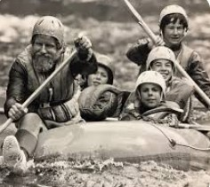

Meet Our Team

Our team is dedicated to delivering unforgettable whitewater rafting experiences while prioritizing safety, excitement, and adventure.


Our team is dedicated to delivering unforgettable whitewater rafting experiences while prioritizing safety, excitement, and adventure.
Whitewater Rafting has been guiding river adventures for over 20 years. Our passion for the outdoors and commitment to safety have helped us create lifelong memories for thousands of guests.
Founded by a group of avid rafters and nature enthusiasts, our company began as a small local business with a vision to share the thrill of the rapids with others. Over the years, we have expanded to offer trips across some of the most scenic and challenging rivers in the country.
Throughout our journey, safety and environmental stewardship have been our top priorities. We work closely with local communities to preserve the natural beauty and promote responsible adventure tourism. Our experienced guides are passionate about sharing their knowledge and ensuring every trip is both exciting and safe.
Our rafting trips cater to all skill levels, from beginners looking for a gentle float to adrenaline seekers ready to conquer wild rapids. Each adventure offers unique landscapes, challenging courses, and unforgettable memories.
Whether you have just a few hours or a full day, our diverse offerings provide something for everyone. Join us for a half-day excursion perfect for families or tackle our full-day adventures that test your paddling skills and endurance.
Every trip is led by certified guides who prioritize your safety while sharing exciting stories about the rivers, wildlife, and geology of the region. Prepare for splashes, laughs, and breathtaking views around every bend!